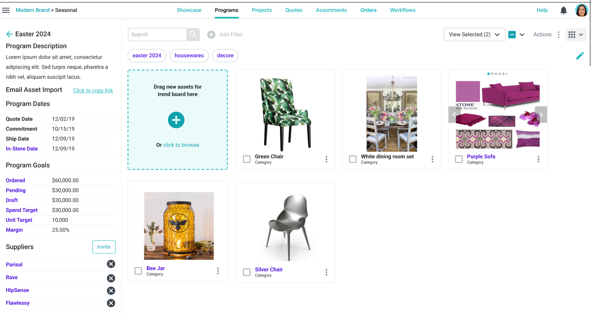

From inspiration to a product conceptMaking room for the first idea.
Helping creative teams capture inspiration before a product has a complete specification.
A new workflow, delivered in 2 releases
Read the case studyPRODUCT · PEOPLE · TECHNOLOGY
I turn complex workflows into tools people can use. My work spans AI platforms at Amazon, product ideation at Surefront, and customer workflows at Wolters Kluwer.
Seattle, WA · M.S. Software Engineering, Carnegie Mellon
WHERE I’VE BUILT
Different products. A focus on the people using them.
I build platforms and AI agents that help scientists run demand-forecasting experiments, with responsibility from workflow design through production reliability.
I helped a four-person team turn a new ideation workflow into two releases, working with client stakeholders on discovery, priorities, and delivery.
I built enterprise workflows for sales and support teams, connecting business requirements, Salesforce implementation, and feedback from UAT.
A CLOSER LOOK
The problem, my decisions, and what changed.

From inspiration to a product conceptHelping creative teams capture inspiration before a product has a complete specification.
A new workflow, delivered in 2 releases
Read the case studyGiving forecasting scientists a simpler way to launch, track, and review model experiments.
~90% less experiment setup time
Read the case studyConnecting customer context, skills-based routing, and the support agent’s workspace.
30–40% lower service-team turnaround
Read the case studyA LITTLE ABOUT ME
Carnegie Mellon University
M.S. in Software Engineering
I’m drawn to the point where a complicated problem becomes a clear next step for a team. I like understanding how people work, asking what is getting in their way, and figuring out what we can make better.
My engineering background helps me work through the details with a team. My product experience has taught me to connect those details to user needs, make priorities explicit, and keep learning from what we ship.
Today, I’m focused on technical product management—building tools that are useful, dependable, and easy to fit into someone’s day.